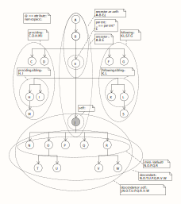

Learning XSLT with Python
XSLT is a functional language for transforming XML data into various formats (e.g., XML, HTML, text). It embeds XPath, a query language for navigating XML trees. As of March 2023, Python supports XSLT and XPath via libraries like lxml (XSLT 1.0) and saxonche (XSLT 3.0/XPath 3.1 for advanced features like streaming and JSON handling). This repo provides examples, CLI tools for building/debugging XSLT, validating XML, and testing XPath 3.1 expressions, along with pointers to XSLT training resources.g., Michael Kay’s books).
Quick Start
Clone the repo:
git clone https://github.com/aleph2c/learning_xslt_with_python.git
cd learning_xslt_with_python
pip install -e .
source venv/bin/activate
xslt install-compiler-errors # installs Java version of sachonche
Testing XPath Patterns
Imagine you are trying to understand how to use XPath matching expressions with XSLT.
You would like to reference the following picture -- a graph depicting an XML tree
structure with nodes labeled for axes like child, descendant, parent, ancestor,
sibling, etc. -- and the /patterns/axis_testing.xml file that represents this
picture, to try out various XPath matching expressions.

To see the entire XML file, we could set the context to the "root" node then match against everything in the document:
try -d patterns/ xpath -x"axis_testing.xml" -c"/" -p"*"
context: /
<A id="1">
<B id="2">
<C id="3"/>
<D id="4"/>
<E id="5">
<H id="8">
<M id="13"/>
</H>
<I id="9"/>
<J id="10">
<N id="14"/>
<O id="15">
<T id="20"/>
<U id="21"/>
</O>
<P id="16"/>
<Q id="17"/>
<R id="18">
<V id="22"/>
<W id="23"/>
</R>
</J>
<K id="11"/>
<L id="12">
<S id="19"/>
</L>
</E>
<F id="6"/>
<G id="7"/>
</B>
</A>
Now let's set J as the node context and perform our first axis experiment:
try xpath -c "//J" -p "self::*/name()"
context: //J
J
Since the command is lazy, we can query from the J context without
re-specifying it and look back at J's ancestors like this:
try xpath -p "ancestor::*/name()"
context: //J
J
"A"
"B"
"E"
Note If you are parsing an
xhtmldoc include thexhtmlnamespace prefix in your query:try -d oneal xpath -x example.html -c "/" -p "//xhtml:h1[1]"
Evaluating XSLT programs
To learn XSLT for transforming XML data, you can use this repository’s
command-line tools and XSLT compilers (installation instructions below). Suppose
you’re working through Chapter 7.4 of Sal Mangano’s XSLT Cookbook and have
transcribed the text-hierarchy.xsl example into
sal/ch07/text-hierarchy.xsl. You want to transform books.xml into
text-hierarchy.txt using this XSLT program.
To do this:
- Set the working directory as
sal/ch07, and - Use the
text-hierarchy.xslXSLT program to transformbooks.xml. - Pass an
indentparameter (four space) to control output formatting - Save the result to
text-hierarchy.txtfile. - Display verbose output (
-v) for debugging.
Run the following command:
try -d sal/ch07 ex \
-x books.xml \
-p saxon \
-l text-hierarchy.xsl \
--params "indent=' '" \
-o text.hieracrhy.txt \
-v
If you’re learning XSLT, you might make mistakes in text-hierarchy.xsl. The
try command caches its inputs, so if you encounter compiler errors, you can edit
the XSLT file and re-run the transformation without retyping
the full command:
try ex -v
Repeat this cycle — edit text-hierarchy.xsl, run try ex -v, and check errors
— until your XSLT program produces the desired text-hierarchy.txt output.
Context
XSLT (eXtensible Stylesheet Language Transformations) is a declarative language for converting XML data into other formats, such as HTML, SVG, text, or even code. With XSLT 3.0, it can also handle JSON input and output, making it versatile for modern data transformation.
Compared to templating libraries like Python's Jinja2, XSLT is more specialized
for tree-based data (XML/JSON), with built-in XPath for querying and functional
features for complex transformations. While Jinja2 is simpler for text
templating, XSLT excels in handling large datasets or streams declaratively — you
specify what the output should look like, and the language figures out how to
generate it. XSLT is functional (e.g., no mutable state, recursion for loops),
but it's not a Lisp dialect; it's XML-based with event-driven template matching.
XSLT programs are serializable (as XML), enabling metaprogramming — your XSLT can transform itself. Python supports XSLT via libraries like lxml (for XSLT 1.0) or saxonche (for XSLT 3.0/XPath 3.1). The standard is at version 3.0, but many open-source tools (e.g., lxml) stick to 1.0, while saxonche provides full 3.0 support.
Recommended Learning Resources
- Start with Basics: Michiel van Otegem’s Teach Yourself XSLT in 21 Days.
Chapter 3 has helpful XPath diagrams for tree navigation. Use the
try xpathcommand with this book to dial in the Xpath concepts. Build up a snippet library as you work through the chapters. Get used to a troubleshooting workflow as you wrestle with this book. - Lab Work: Sal Mangano’s XSLT Cookbook for practical examples.
- Intermediate: Jeni Tennison’s Beginning XSLT 2.0: From Novice to Professional. Use ChatGPT to interrogate examples and fill gaps.
- Advanced Patterns: Michael Kay’s book, Chapter 17: Stylesheet Design Patterns.
- No Dedicated XSLT 3.0 Book Yet: Use Michael Kay’s XSLT 2.0 and XPath 2.0 Programmer's Reference (covers much of 3.0) and his article Transforming JSON using XSLT 3.0. For XPath 3.0/3.1, try Altova’s free training resources.
- XSLT 3.0 Specific: Martin Honnen’s XSLT 3.0 by Example blog, Stack Overflow answers, and GitHub gists.
- Transforming JSON using XSLT 3.0 by Michael Kay. (There is supporting example code for some of these JSON transforms and the pattern's code in the pattern's folder of this repo.)
Setting Up Your Development Enviroment
To make XSLT less verbose (a trade-off for its XML-based metaprogramming), use editor snippets. In Vim/Neovim, SirVer’s UltiSnips is excellent—create your own library as you learn. Build snippets while reading books, adding comments for reference. Use UltiSnips’ shortcut to jump between your XSLT file and snippet files. Keep snippets under Git-control for portability.
With snippets, typing and debugging XSLT becomes faster. Experiment with Evan Lenz’s XSLT-visualizer to see how templates react to XML input in an event-driven way.
Shifting to Functional Thinking
XSLT is functional, so stop thinking procedurally (like in Python). Prototype in Python first, but avoid overwriting variables—use recursion instead. This repo’s try to-python command converts XML to Python code as a starting point.
Once your functional Python prototype works, use Grok/Gemini to translate it to XSLT. The output won’t run perfectly, but it handles syntax hurdles. Combine it with your XPath patterns (tested via try xpath, see below) and snippets to refine. Use the repo’s try ex tool to compile and test until it works.
Tools and Libraries
XSLT has been developed for 25 years, with Michael Kay (Saxonica) leading standards and tools. Saxonica’s open-source Saxon-HE supports XSLT 3.0; they sell licensed versions with extra features. Kay’s team is responsive on Stack Overflow and bug trackers.
In Python, install saxonche (12.8.0+, Mozilla license) for XSLT 3.0/XPath 3.1:
- Supports XSLT 3.0, XPath 3.1, XQuery 3.1, XSD 1.1 (schema validation disabled in free version).
- It’s a C port of Saxon Java, usable in Python via ctypes.
However, saxonche has limitations:
- Incomplete documentation and examples (see this repo's
/onealfolder for working ones). - Error messages are off by default -- wrap call in exceptions for recovery.
- For stability, use
lxmlfor XSLT 1.0 (better documented, based on libxml2/libxslt)
To see compiler errors (essential for learning), use Java's Saxon-HE CLI:
java -jar saxon-he-12.0.jar -xsl:your.xsl -s:your.xml
This repo's CLI tools call Java for errors when saxonche detects issues.
Install Java to set up as below.
Installation Instructions
In order for you get build a decent learning environment, setup:
- This repo's CLI
- Two XSLT pythone parser (
lxml/sachonche) - Example files
git clone git@github.com:aleph2c/leaning_xslt.git
cd learning_xslt
python3 -m venv venv
source ./venv/bin/activate
pip install --upgrade pip
pip install -e .
# see note:
xslt install-compile-errors
Note:
The saxonche pip package used by this repo will not output XSLT compiler errors,
but if you want to see them (which you do) this command will fix the problem:
xslt install-compiler-errors
This will download the
zipped java version of saxon
and decompress its contents in ./java/. With this jar installed the try
cli tool will call out to java when the saxoniche library fails to compile
your .xsl. It will rerun the compilation using the jar and output the XSLT
compiler error messages to the terminal. This will give you the feedback
required to debug your programs.
Running Examples
The repo installs a try command. To see how it works:
try --help
Usage: try [OPTIONS] COMMAND [ARGS]...
Try an XSLT/XPath example and cache the command
Options:
-d, --dir TEXT Set the exercise directory
--help Show this message and exit.
Commands:
cache View your command cache
ex Run an exercise
xpath Test an XPath query on a given xml doc and context
How to Run Specific Examples
To see how to run an exercise:
try ex --help
Usage: try ex [OPTIONS]
Run an exercise:
try -d sal/ch07 ex \
-x books.xml \
-l text.hierarchy.xsl \
-params "indent=' ',param2='some_value'" \
-o text.hierarchy.txt
Options:
-n, --node-name TEXT Set the node name
-x, --xml TEXT Set the xml file
-j, --json TEXT Set the json file (saxon)
-l, --xls TEXT Set the xls file
-p, --processor TEXT Set the processor (lxml|saxon)
-o, --output_file TEXT Set the output file name
--params TEXT Set the optional parameter(s)
-v, --verbose Run in verbose mode?
--help Show this message and exit.
To run an example:
try -d jenni/ch2_html_from_xml ex -x TVGuide2.xml -l TVGuide2.xsl -o TVGuide2.html -p lxml -v
# a lot of XML
ran the lxml process
To see your cache:
try cache
{'context': '', 'home_dir': 'jenni/home/scott/xslt/ch3_templates',
'output_file_name': 'TVGuide2.html', 'processor': 'lxml',
'xls_file_name': 'TVGuide2.xsl', 'xml_file_name': 'TVGuide2.xml'}
To run the same exercise again:
try ex -v
# a lot of XML
ran the lxml processor
To try the same example with the saxon processor, you just have to tell the
try command you want to use the saxon processor, if the other options
are not specified it will use your cached options:
try ex -p saxon -v
# a lot of XML
ran the saxon processor
Running Your Own Examples
To run examples from a different book, add descriptives folder names and put
your xml and xsl files in these folders. Use the -d flag to point to the
folder you are working with, then run the sub-commands as you did before.
JSON Transform Example 1
In this example we will perform a transform to increase the price of a product tagged with "ice" by 10 percent (see ./patterns/to_json.xs):
Given this input:
python -m json.tool ./michael/json_input.json
[
{
"id": 2,
"name": "An ice sculpture",
"price": 12.50,
"tags": ["cold", "ice"],
"dimensions": {
"length": 7.0,
"width": 12.0,
"height": 9.5
},
"warehouseLocation": {
"latitude": -78.75,
"longitude": 20.4
}
},
{
"id": 3,
"name": "A blue mouse",
"price": 25.50,
"dimensions": {
"length": 3.1,
"width": 1.0,
"height": 1.0
},
"warehouseLocation": {
"latitude": 54.4,
"longitude": -32.7
}
}
]
Perform a transform (saxonpy works, saxonche stackoverflow):
# this will crash with saxonche 12.0 due to stackoverflow errors
# but will run with saxonche 12.1
try -d michael \
ex -j json_input.json \
-l to_json.xsl \
-o json_output.json \
-p saxon
This will create the following output:
python -m json.tool ./michael/json_output.json
[
{
"id": 2,
"name": "An ice sculpture",
"price": 13.75,
"tags": [
"cold",
"ice"
],
"dimensions": {
"length": 7,
"width": 12,
"height": 9.5
},
"warehouseLocation": {
"latitude": -78.75,
"longitude": 20.4
}
},
{
"id": 3,
"name": "A blue mouse",
"price": 25.5,
"dimensions": {
"length": 3.1,
"width": 1,
"height": 1
},
"warehouseLocation": {
"latitude": 54.4,
"longitude": -32.7
}
}
]
JSON Transform Example 2
We would like to invert the hierarchy of a json document. In this example we will take the data being organized from faculty->courses->students->email and transform it to email->courses. We will also sort the output based on last name and then the first name of each student, but we will keep the student's name out of the final output.
Given this input:
[
{
"faculty": "humanities",
"courses": [
{
"course": "English",
"students": [
{
"first": "Mary",
"last": "Smith",
"email": "mary_smith@gmail.com"
},
{
"first": "Ann",
"last": "Jones",
"email": "ann_jones@gmail.com"
}
]
},
{
"course": "History",
"students": [
{
"first": "Ann",
"last": "Jones",
"email": "ann_jones@gmail.com"
},
{
"first": "John",
"last": "Taylor",
"email": "john_taylor@gmail.com"
}
]
}
]
},
{
"faculty": "science",
"courses": [
{
"course": "Physics",
"students": [
{
"first": "Anil",
"last": "Singh",
"email": "anil_singh@gmail.com"
},
{
"first": "Amisha",
"last": "Patel",
"email": "amisha_patel@gmail.com"
}
]
},
{
"course": "Chemistry",
"students": [
{
"first": "John",
"last": "Taylor",
"email": "john_taylor@gmail.com"
},
{
"first": "Anil",
"last": "Singh",
"email": "anil_singh@gmail.com"
}
]
}
]
}
]
Perform the transform (saxonpy works, saxonche stackoverflow):
try -d michael \
ex -x json_input2.json \
-l to_json2.xsl \
-o json_output2.json \
-p saxon
This will produce the following output
python -m json.tool ./patterns/json_output2.json
[
{
"email": "ann_jones@gmail.com",
"courses": [
"English",
"History"
]
},
{
"email": "amisha_patel@gmail.com",
"courses": [
"Physics"
]
},
{
"email": "anil_singh@gmail.com",
"courses": [
"Physics",
"Chemistry"
]
},
{
"email": "mary_smith@gmail.com",
"courses": [
"English"
]
},
{
"email": "john_taylor@gmail.com",
"courses": [
"History",
"Chemistry"
]
}
]
Integrating XSLT 3.0 with Python in the main thread
The saxonche documentation is incomplete
and almost useless. To see fixed versions of the low quality python examples
provided by Saxonica look in the oneal folder of this repo.
If you want to get your python code to parse XML/JSON/XSLT and output XML/JSON
using saxonche consider the following:
from pathlib import Path
from saxonche import PySaxonProcessor
def transform_with_saxonche(
self, home_dir, xml_file_name, xsl_file_name, output_file_name
):
# Don't use the PySaxonProcess context manager if you are calling saxonche
# over and over again within your program. Instead build the proc and
# xsltproc once, and reference them when you need them. If you don't do
# this, you will get strange memory errors:
# "JNI_CreateJavaVM() failed with result: -5" (last seen in saxonc-he 11.4)
#
# Example of how to build the proc and xsltproc once per program invocation:
#
# from functools import cache as cached
# @cached
# def get_cached_procs_from(*args):
# proc = PySaxonProcessor(licence=False)
# xsltproc = proc.new_xslt30_processor()
# return proc, xsltproc
#
# def transform_with_saxonche(...)
# proc, xsltproc = get_cached_procs_from(PySaxonProcessor)
# # ...
# If you are running your transforms once per program invocation
# you can use the PySaxonProcessor context manager. Don't be fooled, given
# that this context manager doesn't clean up memory when it's done, it's not
# really behaving like a Python context manager. (see the memory bug
# mentioned above)
with PySaxonProcessor(license=False) as proc:
xsltproc = proc.new_xslt30_processor()
xsltproc.set_cwd(str(home_dir))
if not Path(home_dir).exists():
print(f"{home_dir} doesn't exist")
exit(1)
if not (Path(home_dir) / xml_file_name).exists():
print(
f"xml_file_name: {str(Path(home_dir) / xml_file_name)} doesn't exist"
)
exit(1)
if not (Path(home_dir) / xsl_file_name).exists():
print(
f"xsl_file_name: {str(Path(home_dir) / xsl_file_name)} doesn't exist"
)
exit(1)
if Path(xml_file_name).suffix == ".json":
json_input_param = proc.make_string_value(str(home_dir / xml_file_name))
xsltproc.set_parameter("json_input_filename", json_input_param)
stylesheet_file = str(Path(home_dir) / xsl_file_name)
_exec = xsltproc.compile_stylesheet(
stylesheet_file=stylesheet_file,
)
if _exec is None:
print("saxonica failed")
exit(1)
if Path(xml_file_name).suffix == ".json":
# it's a mystery why we have to use call_template_returning_file
# and not make_string_value (this isn't documented anywhere)
_exec.call_template_returning_file(output_file=output_file_name)
else:
# add a test_param to validate saxon is working
test_param = proc.make_string_value(str(home_dir / xml_file_name))
_exec.set_parameter("test_param", test_param)
_exec.set_initial_match_selection(file_name=xml_file_name)
_exec.apply_templates_returning_file(output_file=output_file_name)
with open(home_dir / output_file_name, "r") as fp:
contents = fp.read()
print(contents)
Integrating XSLT 3.0 with Multithreaded Python
# This doesn't cause StackOverFlow crashes and, its fully documented
# and its documentation isn't wrong. It only support XSLT 1.0
import lxml
But if you are willing to accept some risk, here is a working demo of Python thread performing XSLT transforms using saxonche without causing StackOverFlows:
# working copy can be found in ./cli/thread_demo.py
import os
import shutil
from uuid import uuid1
from pathlib import Path
from queue import Queue
from threading import Thread
from threading import Lock
from collections import namedtuple
from threading import Event as ThreadEvent
from saxonche import PySaxonProcessor
proc_globals = {}
proc_globals_lock = Lock()
ValidateXmlPath = (Path(__file__).parent / "validate_xml.xsl").resolve()
SaxonPayload = namedtuple(
"SaxonPayload",
["home_dir", "xml_file_name", "xsl_file_name", "output_file_name", "verbose"],
)
def __initialize_saxon(*args):
"""The PySaxonProcessor proc and the xslt30 proc should only be made once"""
if "proc" in proc_globals:
proc = proc_globals["proc"]
xsltproc = proc_globals["xsltproc"]
else:
proc = PySaxonProcessor(license=False)
xsltproc = proc.new_xslt30_processor()
proc_globals["proc"] = proc
proc_globals["xsltproc"] = xsltproc
return proc, xsltproc
# call this from the main thread at least once
proc_globals_lock.acquire()
__initialize_saxon()
proc_globals_lock.release()
def __saxon_xslt30_transform(
lock, home_dir, xml_file_name, xsl_file_name, output_file_name, verbose=False
):
result = ""
lock.acquire()
proc, xsltproc = __initialize_saxon()
home_path = Path(home_dir)
xml_file_path = Path(home_dir) / xml_file_name
xsl_file_path = Path(home_dir) / xsl_file_name
output_file_path = Path(home_dir) / output_file_name
if not home_path.exists():
result = f"{home_dir} doesn't exist"
lock.release()
return result
if not xml_file_path.exists():
result = f"xml_file_name: {xml_file_path} doesn't exist"
lock.release()
return result
if not (Path(home_dir) / xsl_file_name).exists():
result = f"xsl_file_name: {xsl_file_path} doesn't exist"
lock.release()
return result
stashed_output_file_path = None
if xml_file_path == output_file_path:
temp_output_path = Path(output_file_path).parent / (str(uuid1())[0:7] + ".tmp")
stashed_output_file_path = output_file_path
output_file_path = temp_output_path
if Path(xml_file_name).suffix == ".json":
json_input_param = proc.make_string_value(str(home_dir / xml_file_name))
xsltproc.set_parameter("json_input_filename", json_input_param)
_exec = xsltproc.compile_stylesheet(stylesheet_file=str(xsl_file_path))
if _exec is None:
error = f"{xsltproc.error_message}"
xsltproc.exception_clear()
lock.release()
raise RuntimeError(error)
if Path(xml_file_name).suffix == ".json":
# it's a mystery why we have to use call_template_returning_file
# and not make_string_value (this isn't documented anywhere)
_exec.call_template_returning_file(output_file=str(output_file_path))
if stashed_output_file_path:
shutil.copy(src=output_file_path, dst=stashed_output_file_path)
os.remove(output_file_path)
output_file_path = stashed_output_file_path
del _exec
else:
# add a test_param to validate saxon is working
test_param = proc.make_string_value(str(xml_file_path))
_exec.set_parameter("test_param", test_param)
_exec.set_initial_match_selection(file_name=str(xml_file_path))
_exec.apply_templates_returning_file(output_file=str(output_file_path))
if _exec.exception_occurred:
saxon_error = f"{_exec.error_message}"
_exec.exception_clear()
lock.release()
raise RuntimeError(saxon_error)
if stashed_output_file_path:
shutil.copy(src=output_file_path, dst=stashed_output_file_path)
os.remove(output_file_path)
output_file_path = stashed_output_file_path
# if our output path is an .xml file, run a post-transform-test to see
# if the provided xsl_file_name created valid xml
if output_file_path.suffix == '.xml':
xsl_post_test_path = ValidateXmlPath
if not (xsl_post_test_path).exists():
result = f"xsl_file_name:\n{xsl_post_test_path}\ndoesn't exist"
lock.release()
return result
_exec = xsltproc.compile_stylesheet(stylesheet_file=str(xsl_post_test_path))
_exec.transform_to_string(
source_file=str(output_file_path),
)
if _exec.exception_occurred:
saxon_error = f"{_exec.error_message}"
_exec.exception_clear()
lock.release()
raise RuntimeError(saxon_error)
del _exec
if verbose:
with open(home_dir / output_file_name, "r") as fp:
result = fp.read()
lock.release()
return result
def thread_runner(lock, task_event, input_queue, output_queue):
# this will cause the StackOverFlow if it isn't first called
# in the main thread
lock.acquire()
__initialize_saxon()
lock.release()
while task_event.is_set():
q = input_queue.get(block=True)
input_queue.task_done()
result = __saxon_xslt30_transform(
lock,
home_dir=q.home_dir,
xml_file_name=q.xml_file_name,
xsl_file_name=q.xsl_file_name,
output_file_name=q.output_file_name,
verbose=q.verbose,
)
output_queue.put(result)
# this function demontrates how to create a thread, communicate with it and stop it.
def saxon_xslt30_transform(
home_dir, xml_file_name, xsl_file_name, output_file_name, verbose=False
):
global proc_globals_lock
input_queue = Queue()
output_queue = Queue()
payload = SaxonPayload(
home_dir=home_dir,
xml_file_name=xml_file_name,
xsl_file_name=xsl_file_name,
output_file_name=output_file_name,
verbose=verbose,
)
# The task event is a flag, which when:
# - set: means the thread should run
# - cleared: means the thread should stop and exit
task_event = ThreadEvent()
task_event.set()
thread = Thread(
target=thread_runner,
args=(proc_globals_lock, task_event, input_queue, output_queue),
daemon=True,
)
# start the thread
thread.start()
# give something to the thread
input_queue.put(payload)
# wait for the thread to react
input_queue.join()
# wait for the thread's output
result = output_queue.get(block=True)
output_queue.task_done()
# kill the thread
task_event.clear()
return result
if __name__ == '__main__':
# adjust this to point to the directory containing you files
home_dir = (Path(__file__).parent / ".." / "ch3_templates").resolve()
xml_file_name = "HelloWorld.xml"
xsl_file_name = "HelloWorld.xsl"
output_file_name = "HelloWorld.html"
result = saxon_xslt30_transform(
home_dir, xml_file_name, xsl_file_name, output_file_name, verbose=True
)
print(result)
Testing XPath
Here we run an XPath expression against the menu.xml file in the
otegem/ch03 directory, then cache the command:
try -d ./otegem/ch03 xpath -x menus.xml -c "/" -p "menu"
context: /
<menu>
<appetizers title="Work up an Appetite">
<dish id="1" price="8.95">Crab Cakes</dish>
<dish id="2" price="9.95">Jumbo Prawns</dish>
<dish id="3" price="10.95">Smoked Salmon and Avocado Quesadilla</dish>
<dish id="4" price="6.95">Caesar Salad</dish>
</appetizers>
<entrees title="Chow Time!">
<dish id="5" price="19.95">Grilled Salmon</dish>
<dish id="6" price="17.95">Seafood Pasta</dish>
<dish id="7" price="16.95">Linguini al Pesto</dish>
<dish id="8" price="18.95">Rack of Lamb</dish>
<dish id="9" price="16.95">Ribs and Wings</dish>
</entrees>
<desserts title="To Top It Off">
<dish id="10" price="6.95">Dame Blanche</dish>
<dish id="11" price="5.95">Chocolate Mousse</dish>
<dish id="12" price="6.95">Banana Split</dish>
</desserts>
</menu>
To run the next xpath query against the same file:
try xpath -p "(//dish)[6]"
context: /
<dish id="6" price="17.95">Seafood Past</dish>
try xpath -c "/" -p "/menu/entrees/*/text()"
context: /
Grilled Salmon
Seafood Pasta
Linguini al Pestro
Rack of Lamb
Ribs and Wings
You would use the context to simulate how a template matching an XPath pattern would behave. Suppose you were trying to see what line 12 of the following would output:
1 <?xml version="1.0" encoding="UTF-8"?>
2 <xsl:stylesheet version="1.0"
3 xmlns:xsl="http://www.w3.org/1999/XSL/Transform">
4 <xsl: tempate match="/">
5 <xsl:apply-templates />
6 </xsl:template>
7 <xsl: tempate match="/menu/entrees">
8 Entrees:
9 <xsl:apply-templates />
10 </xsl:template>
11 <xsl:template match="dish">
12 <xsl:value-of select="text" />
13 </xsl:template>
13 </xsl:stylesheet>
We could simulate what would be expressed at line 12 by setting the context to
/menu/entrees:
try xpath -v
3.1
try xpath -c "/menu/entrees" -p "dish/text()[1]"
context: /menu/entrees
Grilled Salmon
Testing XPath Axis Features
This picture will help you understand how the axis feature works in XPath:
This is how the above picture can be represented in XML (see patterns/axis_testing.xml):
try -d patterns/ xpath -x"axis_testing.xml" -c"/" -p"*"
context: /
<A id="1">
<B id="2">
<C id="3"/>
<D id="4"/>
<E id="5">
<H id="8">
<M id="13"/>
</H>
<I id="9"/>
<J id="10">
<N id="14"/>
<O id="15">
<T id="20"/>
<U id="21"/>
</O>
<P id="16"/>
<Q id="17"/>
<R id="18">
<V id="22"/>
<W id="23"/>
</R>
</J>
<K id="11"/>
<L id="12">
<S id="19"/>
</L>
</E>
<F id="6"/>
<G id="7"/>
</B>
</A>
Now let's set J as the node context and perform our first axis experiment:
try xpath -c "//J" -p "self::*/name()"
context: //J
J
Let's look to see how the following:: axis works, we search the "following" axis for any node name (*)
and return the matched node names:
try xpath -p "following::*/name()"
"K"
"L"
"S"
"F"
"G"
try xpath -p "(following::* union preceding::*)/name()"
"C"
"D"
"H"
"M"
"I"
"K"
"L"
"S"
"F"
"G"
Note If you are parsing an
xhtmldoc include thexhtmlnamespace prefix in your query:try -d oneal xpath -x example.html -c "/" -p "//xhtml:h1[1]"
Prototyping your XSLT/XPATH code in Python
The try to-python writes boilerplate code for you. You would use this
command to:
- convert an XML file into a python dict within a minimal python program
- extend this generated python program with recursive expressions to solve your problem. (like an XSLT program would solve your problem)
- debug this python program using python tools
- place the working recursive python program into ChatGPT to discover XSLT syntax that will do the same thing
- use the recursive styled python, and the broken ChatGPT examples as a set of mental blueprints for how to write your XSLT program.
- write out your XSLT referencing these examples
- debug your XSLT until it works.
try -d patterns to-python -x axis_testing.xml -o axis_testing.py -v
# some python code written to the terminal
This command will output this python program:
import pprint
def pp(item):
pprint.pprint(item)
A = {
"A": {
"@id" :"1",
"B": {
"@id" :"2",
"C": {
"@id" :"3",
},
"D": {
"@id" :"4",
},
"E": {
"@id" :"5",
"H": {
"@id" :"8",
"M": {
"@id" :"13",
},
},
"I": {
"@id" :"9",
},
"J": {
"@id" :"10",
"N": {
"@id" :"14",
},
"O": {
"@id" :"15",
"T": {
"@id" :"20",
},
"U": {
"@id" :"21",
},
},
"P": {
"@id" :"16",
},
"Q": {
"@id" :"17",
},
"R": {
"@id" :"18",
"V": {
"@id" :"22",
},
"W": {
"@id" :"23",
},
},
},
"K": {
"@id" :"11",
},
"L": {
"@id" :"12",
"S": {
"@id" :"19",
},
},
},
"F": {
"@id" :"6",
},
"G": {
"@id" :"7",
},
},
},
}
if __name__ == '__main__':
pp(A)
If you run this program you will see this in your terminal:
python ./patterns/axis_testing.py
{'A': {'@id': '1',
'B': {'@id': '2',
'C': {'@id': '3'},
'D': {'@id': '4'},
'E': {'@id': '5',
'H': {'@id': '8', 'M': {'@id': '13'}},
'I': {'@id': '9'},
'J': {'@id': '10',
'N': {'@id': '14'},
'O': {'@id': '15',
'T': {'@id': '20'},
'U': {'@id': '21'}},
'P': {'@id': '16'},
'Q': {'@id': '17'},
'R': {'@id': '18',
'V': {'@id': '22'},
'W': {'@id': '23'}}},
'K': {'@id': '11'},
'L': {'@id': '12', 'S': {'@id': '19'}}},
'F': {'@id': '6'},
'G': {'@id': '7'}}}}
Useful links
- Broken python examples from Saxonica
- interview with Michael Kay
- XPath 3.0/3.1 training resource,
- XSLT-visualizer
- XSLT 3.0 Prague 2016 resources
- XSLT XPath Tutorial by arbitrarytechnology
- Saxon XSLT 3.0 JSON Whitepaper
- What's new in XSLT 3.0 and XPath 3.1
- xidel: Xidel is a command line tool to download and extract data from HTML/XML pages as well as JSON APIs
- XML/XSLT links on Digital humanities
- XSLT elements
- Martin Honnen's Understanding how to use maps
- Martin Honnen's XSLT 3.0 by example blog
- Martin Honnen's XSLT github gists
- XSL 3.0 Specification
- A Roadmap to XML Parsers in Python
- xmlschema python package